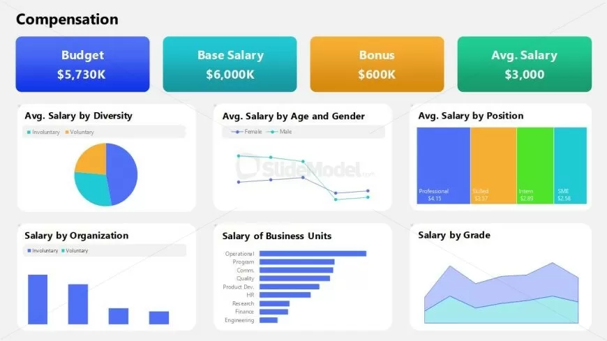
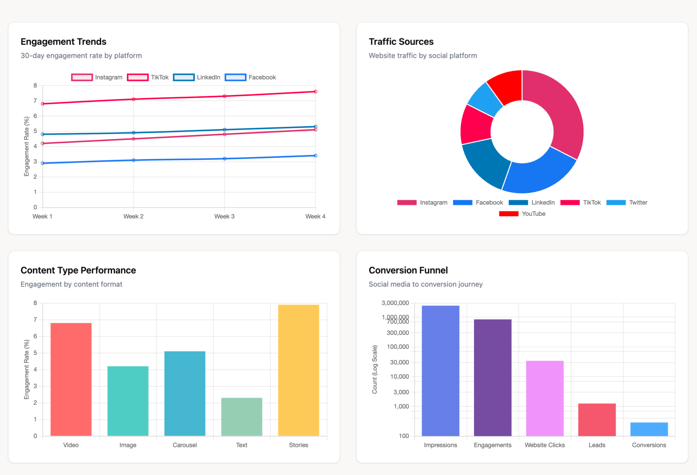

Featured HR Analytics Projects
Workforce intelligence dashboards built using Power BI, Excel, SQL and HR Analytics

Employee Attrition Analysis Dashboard
Identified turnover trends, attrition drivers, department-level risk areas and employee retention patterns.

HR Analytics Dashboard
Workforce analysis focusing on employee demographics, salary trends, retention metrics and engagement patterns.

Compensation Analytics Dashboard
Salary allocation, payroll trends and compensation planning insights for strategic workforce management.

Employee Engagement Dashboard
Engagement metrics, employee satisfaction analysis and organizational sentiment tracking.